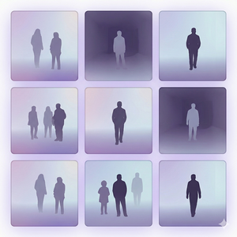
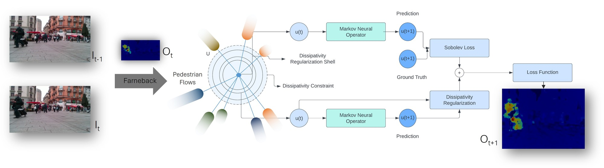
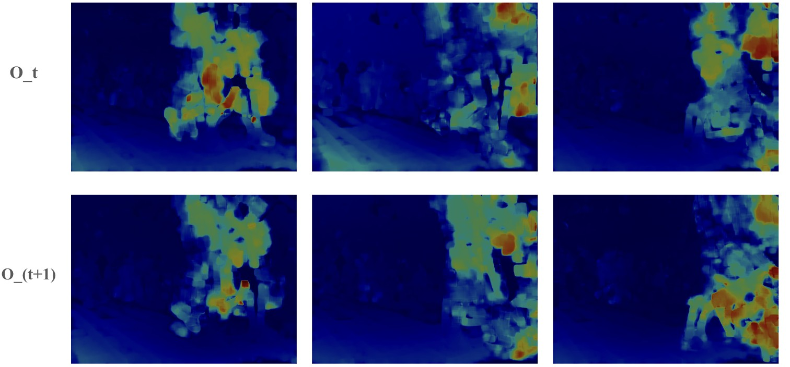
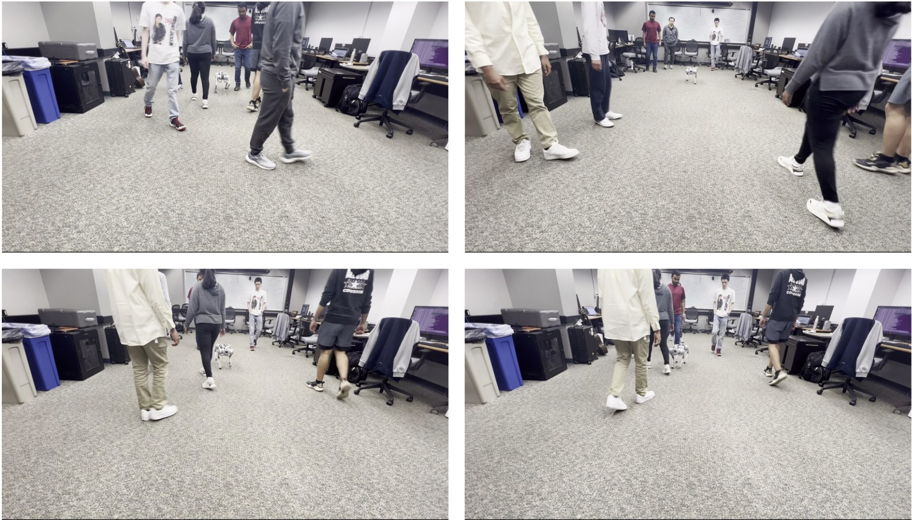

Predicting pedestrian movements remains a complex and persistent challenge in robot navigation research. We must evaluate several factors to achieve accurate predictions, such as pedestrian interactions, the environment, crowd density, and social and cultural norms. Accurate prediction of pedestrian paths is vital for ensuring safe human-robot interaction, especially in robot navigation. Furthermore, this research has potential applications in autonomous vehicles, pedestrian tracking, and human-robot collaboration. Therefore, in this paper, we introduce FlowMNO, an Optical Flow-Integrated Markov Neural Operator designed to capture pedestrian behavior across diverse scenarios. Our paper models trajectory prediction as a Markovian process, where future pedestrian coordinates depend solely on the current state. This problem formulation eliminates the need to store previous states. We conducted experiments using standard benchmark datasets like ETH, HOTEL, ZARA1, ZARA2, UCY, and RGB-D pedestrian datasets. Our study demonstrates that FlowMNO outperforms some of the state-of-the-art deep learning methods like LSTM, GAN, and CNN-based approaches, by approximately 86.46% when predicting pedestrian trajectories. Thus, we show that FlowMNO can seamlessly integrate into robot navigation systems, enhancing their ability to navigate crowded areas smoothly.

Pedestrians may change direction suddenly, so past states are a poor guide to the next one. FlowMNO therefore treats the crowd as a Markov process: the next state depends only on the current one, and no history has to be stored. Pedestrians are detected in each frame with YOLOv3-tiny and non-maximum suppression, and the motion between consecutive frames \(I_{t-1}, I_t\) is captured as a dense Farneback optical flow \(O_t\). A Markov neural operator then predicts the next flow field,
The operator learns the one-step solution map \(\hat S_h : f(t) \mapsto f(t+h)\) and is trained with a Sobolev-norm loss on the residual \(r = \hat S_h(f) - S_h(f)\), computed in Fourier space for \(p = 2\):
Composing \(\hat S_h\) with its own output gives long-horizon predictions, \(f(nh) \approx \hat S_h^{\,n}(f_0)\). Each pedestrian's next position \((x_{t+1}, y_{t+1})\) is read off \(O_{t+1}\) as the flow displacement at the centroid of their bounding box in frame \(I_t\).

The predicted positions \((x_{t+1}, y_{t+1})\) become dynamic obstacles in the Generalized Velocity Obstacles (GVO) framework. For every pedestrian \(i\), GVO evaluates the relative velocity \(v_{r_i} = v_{r_\text{robot}} - v_{r_i^\text{pedestrian}}\) to assess collision risk and choose the robot's desired velocity.

ADE / FDE (lower is better) against state-of-the-art deep learning methods on ETH and Hotel, Zara1, Zara2 and UCY. On the RGB-D pedestrian dataset FlowMNO reaches an ADE of 0.03 and an FDE of 0.04.
| Model | ETH | Hotel | Zara1 | Zara2 | UCY | Average |
|---|---|---|---|---|---|---|
| SSeg-LSTM | 0.15 / 0.295 | 0.05 / 0.08 | 0.05 / 0.08 | 0.07 / 0.1 | 0.1 / 0.16 | 0.08 / 0.15 |
| SS-LSTM | 0.2 / 0.37 | 0.08 / 0.13 | 0.08 / 0.11 | 0.07 / 0.12 | 0.2 / 0.24 | 0.13 / 0.19 |
| Scene-LSTM | 0.18 / 0.34 | 0.25 / 0.29 | 0.37 / 0.33 | 0.19 / 0.1 | 0.25 / 0.03 | 0.21 / 0.20 |
| Social-LSTM | 0.5 / 1.07 | 0.11 / 0.23 | 0.22 / 0.48 | 0.25 / 0.5 | 0.27 / 0.77 | 0.27 / 0.41 |
| Social-Attention | 0.46 / 4.56 | 0.42 / 3.57 | 0.21 / 0.65 | 0.41 / 3.39 | 0.36 / 4.45 | 0.38 / 3.49 |
| Starnet | 0.73 / 1.48 | 0.49 / 1.01 | 0.27 / 0.56 | 0.33 / 0.7 | 0.41 / 0.84 | 0.46 / 0.94 |
| SGAN (20V-20) | 0.61 / 1.22 | 0.48 / 0.95 | 0.21 / 0.42 | 0.27 / 0.54 | 0.36 / 0.75 | 0.39 / 0.78 |
| CNN-based | 1.04 / 2.07 | 0.59 / 1.17 | 0.43 / 0.90 | 0.34 / 0.75 | 0.57 / 1.21 | 0.59 / 1.22 |
| FlowMNO (Ours) | 0.04 / 0.02 | 0.02 / 0.01 | 0.05 / 0.09 | 0.01 / 0.02 | 0.02 / 0.04 | 0.03 / 0.04 |
| FlowMNO vs. model | ADE reduction (%) |
|---|---|
| SSeg-LSTM | 50.00 |
| SS-LSTM | 69.23 |
| Scene-LSTM | 88.24 |
| Social-LSTM | 96.26 |
| Social-Attention | 98.88 |
| Starnet | 97.30 |
| SGAN (20V-20) | 96.72 |
| CNN-based | 98.06 |
| Average reduction | 86.46 |
@inproceedings{bhaskara2024trajectory,
title = {Trajectory Prediction for Robot Navigation using Flow-Guided Markov Neural Operator},
author = {Bhaskara, Rashmi and Viswanath, Hrishikesh and Bera, Aniket},
booktitle = {IEEE International Conference on Robotics and Automation (ICRA)},
year = {2024}
}